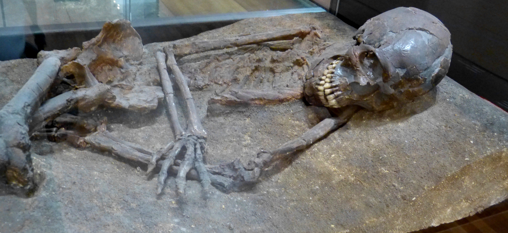
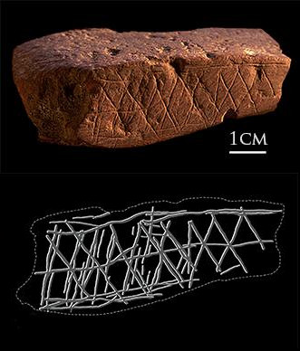

Antes que templos, antes que dioses con nombre, hubo una intuición que ningún otro animal parece tener: que la muerte llega, y que a los muertos hay que hacerles algo.
Esta serie recorre el origen mismo de lo sagrado: cómo la humanidad, mucho antes de Israel, de la Biblia y de cualquier dios con nombre, empezó a mirar el mundo y a sospechar que había algo más. Es la etapa más antigua de todas —y, por eso, la más incierta—. Aquí la evidencia es escasa y muda: un hueso, un pigmento, una piedra. Lo que esos restos significaron para quienes los dejaron es, casi siempre, una hipótesis. Lo diremos con claridad en cada paso.
Empecemos por lo más antiguo que podemos rastrear. No es un dios. No es un templo. Es algo mucho más pequeño y más íntimo: la forma en que los primeros humanos trataron a sus muertos.
Los animales mueren, y muchos reaccionan ante la muerte de los suyos. Los elefantes se detienen junto a los huesos de su manada; algunos primates cargan a sus crías muertas durante días. Pero hay algo que, hasta donde sabemos, solo hace el ser humano: preparar al muerto. Cavar una fosa, colocar el cuerpo de cierta manera, dejar objetos junto a él. Convertir la muerte en un acto, no solo en un hecho.
Ese gesto —el enterramiento intencional— es una de las huellas más antiguas de algo que podríamos llamar pensamiento simbólico: la capacidad de que una cosa signifique otra. Un cuerpo colocado con cuidado ya no es solo un cadáver: es alguien a quien se despide. Y despedir supone, de algún modo, imaginar que la persona no se ha ido del todo.

En una cueva de la Baja Galilea, cerca de Nazaret, se encuentra uno de los cementerios más antiguos que conocemos. En Qafzeh los arqueólogos hallaron los restos de al menos quince Homo sapiens, enterrados hace entre 90.000 y 100.000 años —decenas de miles de años antes de lo que se creía posible para este tipo de conducta—.
No son cuerpos abandonados. Están colocados en posiciones deliberadas, en fosas preparadas. Uno de ellos, conocido como Qafzeh 11, es el enterramiento de un adolescente de doce o trece años: le colocaron sobre el pecho y las manos las astas de un ciervo, cuidadosamente separadas del cráneo del animal, como en un abrazo. No hay ninguna razón práctica para hacer eso. Es un gesto que solo se explica si significaba algo.
Hace cien mil años, alguien enterró a un niño y le puso astas de ciervo sobre el pecho. Ese pequeño gesto —inútil para sobrevivir, pero cargado de sentido— es una de las primeras señales de que el ser humano había empezado a pensar de otra manera.
Junto a los enterramientos de Qafzeh apareció otra cosa: ocre rojo. Setenta y una piezas de este pigmento de óxido de hierro, y herramientas manchadas con él, cerca de las tumbas más antiguas. El ocre había sido calentado en hogueras para conseguir tonos concretos de rojo.
El ocre no alimenta, no abriga, no sirve para cazar. Y sin embargo, a lo largo de toda la prehistoria, aparece una y otra vez ligado a los muertos, al cuerpo, a lo ritual. ¿Por qué el rojo? Nadie lo sabe con certeza. La hipótesis más repetida es tan simple como poderosa: el rojo es el color de la sangre, es decir, el color de la vida. Cubrir a un muerto de rojo podría haber sido una forma de devolverle simbólicamente aquello que había perdido.

En Sudáfrica, en la cueva de Blombos, apareció un trozo de ocre con un patrón geométrico grabado a propósito hace unos 70.000 años: líneas cruzadas, deliberadas, sin ninguna función utilitaria. No es una imagen de nada; es, simplemente, un patrón. Pero es una marca hecha por una mano que quería dejar una marca. Y eso ya es un mundo.
Aquí conviene frenar y ser honestos, porque es fácil dejarse llevar. Un enterramiento con ocre y astas de ciervo demuestra que hubo un gesto intencional y simbólico. Eso es sólido. Pero no nos dice qué creían esas personas. No sabemos si imaginaban un más allá, si temían a los muertos, si los honraban, o si hacían algo que ni siquiera sabríamos nombrar.
El salto de "enterraron con cuidado" a "creían en la vida después de la muerte" es justamente eso: un salto. Puede ser razonable, pero es interpretación, no dato. En esta serie vamos a marcar esa frontera una y otra vez, porque es la única forma honesta de contar una historia hecha de silencios.
Lectura: hay amplio acuerdo en que los enterramientos de Qafzeh son intencionales y simbólicos —eso es sólido—. Lo que significaban esos gestos (si implicaban una creencia en el más allá) es, en cambio, terreno de interpretación, donde la prudencia manda.
Con esa cautela por delante, lo que sí podemos afirmar es enorme: hace cien mil años, en una cueva de Galilea, un grupo de seres humanos miró a sus muertos y decidió que merecían algo más que el olvido. Ese es el punto de partida de todo lo que vendrá.
Las dataciones de Qafzeh (90.000–100.000 años) provienen de las excavaciones dirigidas por Bernard Vandermeersch y del análisis del ocre por Erella Hovers y su equipo, publicado en Current Anthropology. El enterramiento con astas (Qafzeh 11) y las 71 piezas de ocre están documentados por el programa de Orígenes Humanos del Smithsonian.
Un matiz importante: el uso simbólico del ocre en Qafzeh desaparece del registro y no vuelve a aparecer allí hasta unos 12.700 años atrás. Como señalan los propios investigadores, muchas conductas "modernas" surgieron, se perdieron y se reinventaron varias veces. La historia del pensamiento simbólico no es una línea recta ascendente, sino intermitente.
La distinción entre el hecho arqueológico (el enterramiento) y su interpretación (la creencia) sigue el criterio del propio campo, que trata la intención simbólica como sólida y el contenido de esas creencias como especulativo.